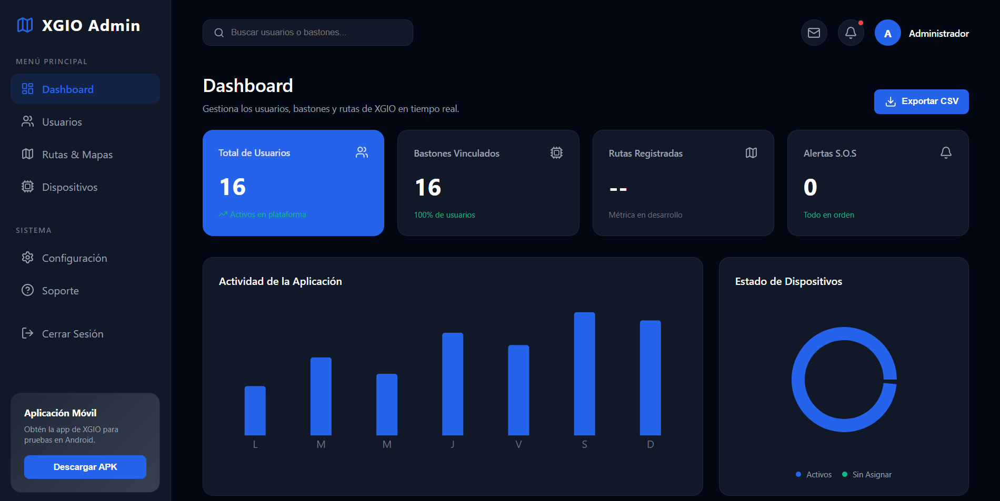
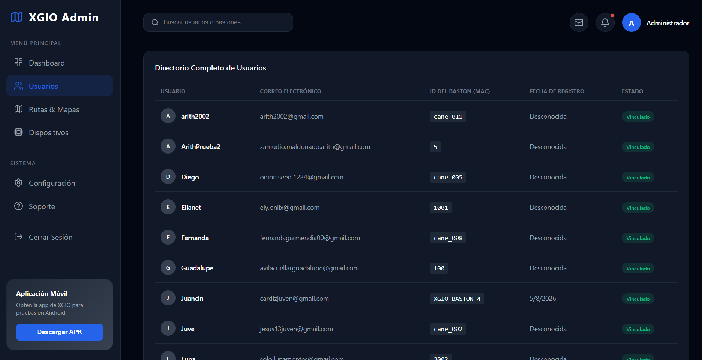
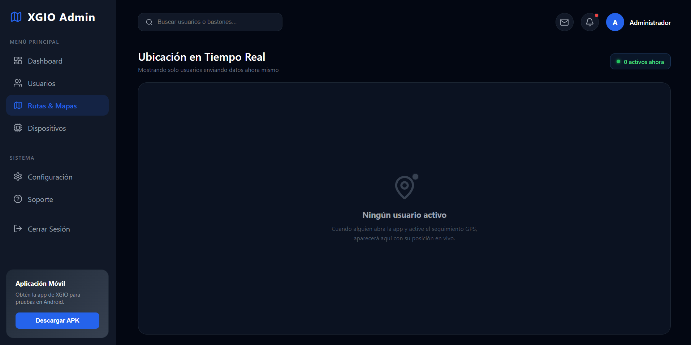
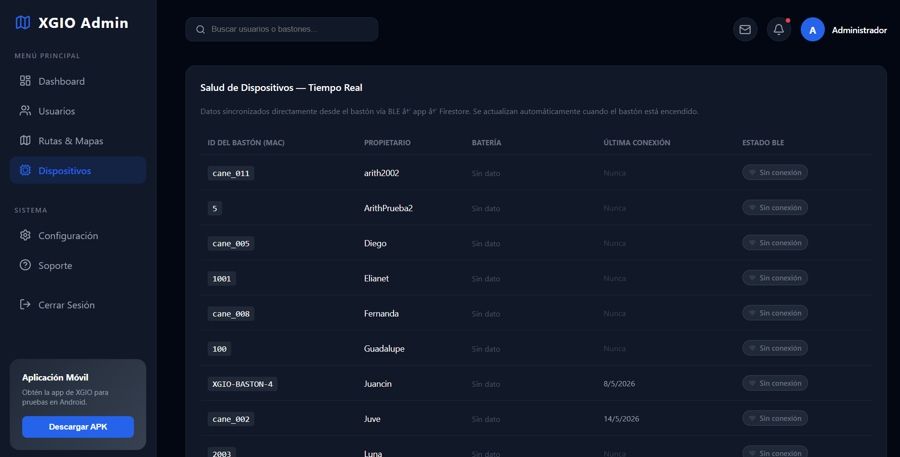
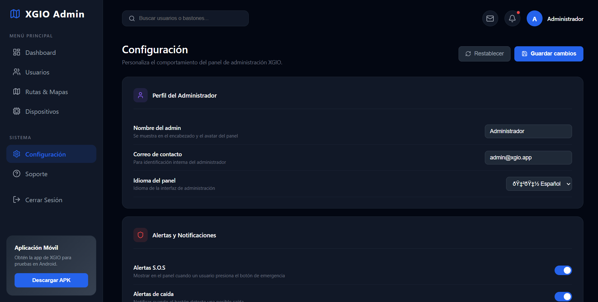
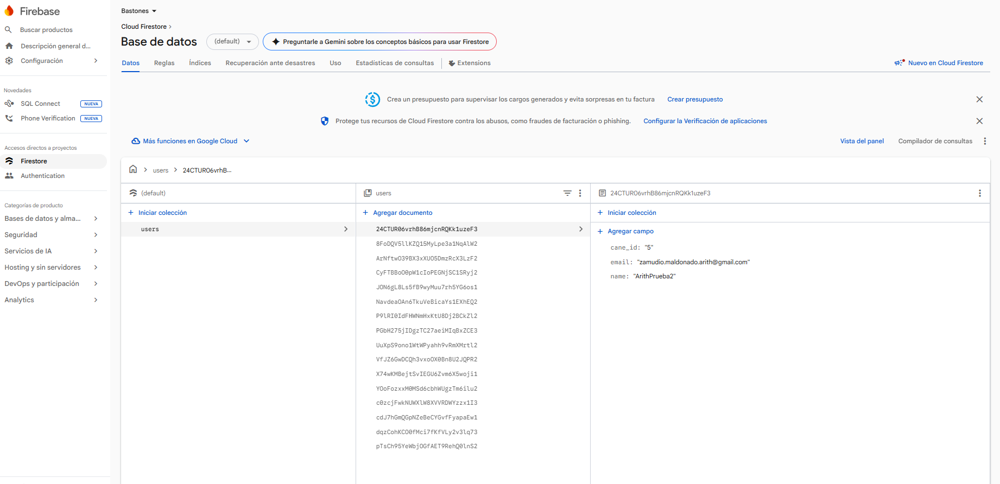

Panel de Administracion (Dashboard Web)
El Dashboard de XGIO es una aplicacion web de administracion construida con React + Vite. Esta disenada para que los administradores monitoreen usuarios, bastones, rutas y alertas en tiempo real desde una sola interfaz.
Acceso
El dashboard es una herramienta interna. No es publico. Esta pensado para el equipo de soporte, administradores y familiares cuidadores con permisos de gestion.
Interfaz y Experiencia de Usuario (UI/UX)
El panel usa una interfaz en modo oscuro, con navegacion lateral fija, busqueda global, tarjetas de resumen y modulos especializados para operacion diaria.
1. Metricas Globales en Tiempo Real
La pantalla principal resume el estado general de la plataforma: usuarios registrados, bastones vinculados, rutas registradas y alertas S.O.S activas. Las metricas se alimentan desde Firestore para reflejar cambios de manera inmediata.

Lectura rapida
La tarjeta de alertas permite detectar emergencias activas de inmediato, mientras que el grafico de actividad ayuda a revisar el comportamiento general de la aplicacion.
2. Directorio de Usuarios
El modulo de usuarios muestra el directorio completo con nombre, correo electronico, ID del baston, fecha de registro y estado de vinculacion. Desde esta vista el administrador puede revisar que usuarios ya tienen un baston asignado.

Gestion operativa
Esta tabla funciona como punto de control para validar registros, revisar correos y confirmar que cada usuario tenga asociado el baston correcto.
3. Rutas y Mapas
La pantalla de rutas y mapas concentra la ubicacion en tiempo real. El dashboard filtra usuarios activos y muestra el estado actual del rastreo GPS; cuando no hay usuarios enviando coordenadas, presenta un estado vacio claro.

Tiempo real
El modulo esta pensado para mostrar solo usuarios con actividad reciente, evitando confundir ubicaciones antiguas con posiciones actuales.
4. Salud de Dispositivos
La seccion de dispositivos lista los bastones vinculados, su propietario, bateria, ultima conexion y estado BLE. Esto ayuda a identificar bastones sin conexion o sin datos recientes.

Monitoreo
Esta vista permite revisar rapidamente si un baston esta reportando informacion desde la app movil y Firestore.
5. Configuracion del Panel
La pantalla de configuracion permite personalizar el perfil del administrador, datos de contacto, idioma del panel y preferencias de alertas. Los cambios se guardan localmente para mantener la experiencia despues de recargar la pagina.

Preferencias persistentes
Las opciones de configuracion se guardan en localStorage, por lo que no requieren una coleccion adicional en Firebase.
6. Base de Datos en Firestore
Firestore es la base de datos principal del dashboard. La coleccion users almacena cada usuario como un documento independiente, con campos como name, email y cane_id. A partir de esos documentos, el panel construye las metricas, el directorio, la salud de dispositivos y las alertas.

Modelo de datos
Cada documento dentro de users representa a una persona registrada. Cuando el usuario enlaza su baston, el campo cane_id permite relacionar ese registro con el dispositivo fisico.
El dashboard tambien consulta subcolecciones por usuario, como CurrentLocation, para obtener el ultimo paquete GPS enviado por la app movil. Ese flujo permite que el panel muestre ubicacion en vivo sin refrescar la pagina.
Arquitectura y Stack
| Tecnologia | Uso |
|---|---|
| React + Vite | Framework de UI y bundler rapido |
| Firebase Firestore | Base de datos en tiempo real con onSnapshot |
| Recharts | Graficas de barras y donut para metricas |
| Lucide Icons | Iconografia del panel |
| Google Maps Embed | Mapa en tiempo real del usuario seleccionado |
| localStorage | Persistencia local de preferencias del administrador |
Implementacion y Codigo
El dashboard esta construido alrededor de datos sincronizados en tiempo real y componentes reutilizables.
useEffect(() => {
setLoading(true);
const unsub = onSnapshot(collection(db, "users"), (snapshot) => {
const usersList = [];
snapshot.forEach((doc) => {
usersList.push({ id: doc.id, ...doc.data() });
});
usersList.sort((a, b) => (a.name || "").localeCompare(b.name || ""));
setUsers(usersList);
setLoading(false);
});
return () => unsub();
}, []);
const activeCanesCount = users.filter(
(user) => user.cane_id?.trim() !== ""
).length;
const sosCount = users.filter(
(user) => user.last_alert === "SOS"
).length;
import { initializeApp } from "firebase/app";
import { getFirestore } from "firebase/firestore";
const firebaseConfig = {
apiKey: import.meta.env.VITE_FIREBASE_API_KEY,
authDomain: import.meta.env.VITE_FIREBASE_AUTH_DOMAIN,
projectId: import.meta.env.VITE_FIREBASE_PROJECT_ID,
storageBucket: import.meta.env.VITE_FIREBASE_STORAGE_BUCKET,
messagingSenderId: import.meta.env.VITE_FIREBASE_MESSAGING_SENDER_ID,
appId: import.meta.env.VITE_FIREBASE_APP_ID,
};
const app = initializeApp(firebaseConfig);
export const db = getFirestore(app);
const renderMap = () => {
const ACTIVE_THRESHOLD_MS = 5 * 60 * 1000;
const now = Date.now();
const activeUsers = users
.filter((user) => user.cane_id)
.map((user) => {
const locData = locationsByUser[user.id] || null;
const last = locData?.last || null;
const diffMs = last
? now - new Date(last.timestamp).getTime()
: Infinity;
return { ...user, last, diffMs };
})
.filter((user) => user.diffMs <= ACTIVE_THRESHOLD_MS)
.sort((a, b) => a.diffMs - b.diffMs);
const mapSrc = selected
? `https://www.google.com/maps?q=${selected.last.latitude},${selected.last.longitude}&z=17&output=embed`
: null;
return (
<div>
{mapSrc && <iframe src={mapSrc} title="Ubicacion en vivo" />}
</div>
);
};
useEffect(() => {
if (users.length === 0) return;
const unsubs = users
.filter((user) => user.cane_id)
.map((user) => {
const ref = collection(db, "users", user.id, "CurrentLocation");
return onSnapshot(ref, (snap) => {
const docs = snap.docs.map((doc) => ({
id: doc.id,
...doc.data(),
}));
const sorted = docs.sort((a, b) => b.id.localeCompare(a.id));
const locs = sorted[0]?.locations || [];
const last = locs[locs.length - 1] || null;
setLocationsByUser((prev) => ({
...prev,
[user.id]: { last, history: locs },
}));
});
});
return () => unsubs.forEach((unsub) => unsub());
}, [users]);
const exportToCSV = () => {
if (users.length === 0) return;
const headers = ["ID,Nombre,Correo,Cane_ID,Fecha_Registro\n"];
const rows = users.map((user) =>
`"${user.id}","${user.name || ""}","${user.email || ""}","${user.cane_id || ""}","${user.created_at || ""}"`
);
const csvContent =
"data:text/csv;charset=utf-8," + headers.concat(rows).join("\n");
const link = document.createElement("a");
link.setAttribute("href", encodeURI(csvContent));
link.setAttribute("download", "xgio_usuarios_export.csv");
document.body.appendChild(link);
link.click();
document.body.removeChild(link);
};
const SETTINGS_KEY = "xgio_admin_settings";
const defaultSettings = {
adminName: "Administrador",
sosEmailAlerts: true,
sosSound: true,
fallAlerts: true,
batteryWarnThreshold: 30,
batteryCriticalThreshold: 15,
bleDeviceName: "XGIO-Cane-01",
};
function loadSettings() {
try {
const stored = localStorage.getItem(SETTINGS_KEY);
return stored
? { ...defaultSettings, ...JSON.parse(stored) }
: defaultSettings;
} catch {
return defaultSettings;
}
}
const saveSettings = () => {
setSettings(settingsDraft);
localStorage.setItem(SETTINGS_KEY, JSON.stringify(settingsDraft));
};
Diseno y Paleta de Colores
El dashboard usa un tema oscuro consistente con la aplicacion movil:
:root {
--bg-dark: #030712;
--bg-panel: #111827;
--bg-panel-hover: #1f2937;
--accent-blue: #2563eb;
--accent-green: #10b981;
--accent-red: #ef4444;
--accent-amber: #f59e0b;
--text-primary: #ffffff;
--text-secondary: #9ca3af;
}
Como Correr el Dashboard
Abre http://localhost:5173 en tu navegador. Para que funcione, necesitas el archivo admin/src/lib/firebase.js con las credenciales de tu proyecto Firebase.